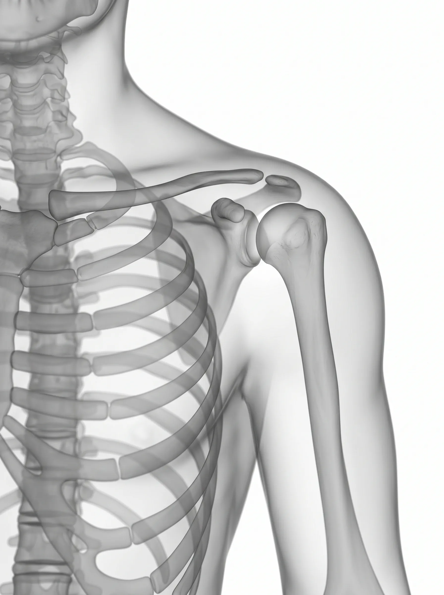
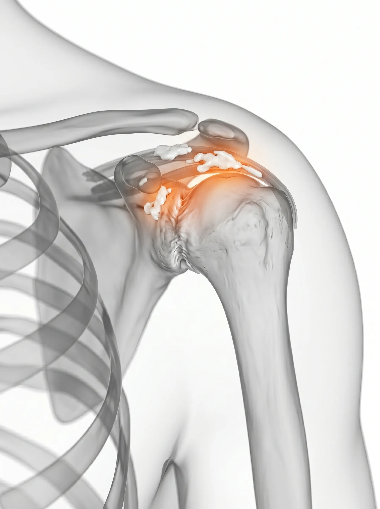

Joint Clinic — Shoulder
어깨의 자유로운 움직임,
정밀한 타겟 치료가 시작입니다.
단순히 참고 견디는 시기는 지났습니다.
삼성의료원 출신의 정밀한 시선으로
굳어버린 관절의 기능을 정상화합니다.
Shoulder Pain Map
당신의 어깨 통증은
어디서 시작되었나요?
위치와 양상이 다른 만큼, 원인도 각각 다릅니다. 정확한 진단이 치료의 시작입니다.
주요증상
가동범위 제한
관절 뻣뻣함
Frozen Shoulder
오십견 (유착성 관절낭염)
관절 주머니에 염증이 생기고 유착이 발생하여 어깨가 굳어지는 질환입니다. 스스로 팔을 들어 올리기 힘들 뿐만 아니라, 다른 사람이 도와줘도 팔이 잘 올라가지 않는 전 방향 가동범위 제한이 가장 큰 특징입니다.
주요증상
특정 각도 통증
근력 약화
Rotator Cuff Tear
회전근개 파열
어깨를 움직이는 핵심 힘줄인 회전근개가 손상되거나 파열된 상태입니다. 오십견과 달리 팔을 올릴 때 특정 각도에서 유독 심한 통증이 발생하며, 팔을 완전히 들어올린 후에는 오히려 통증이 감소하기도 합니다.
주요증상
급성 극심한 통증
심한 야간통
Calcific Tendinitis
석회성 건염
어깨 힘줄 속에 칼슘이 침착되어 돌(석회)이 생기는 질환입니다. 석회가 흡수되는 과정에서 염증이 심하게 발생하여 응급실을 찾을 정도의 매우 극심한 급성 통증이 나타나고 특히 밤에 잠을 이루기 힘듭니다.
주요증상
어깨 마찰음
특정 동작 통증
Shoulder Impingement
어깨 충돌증후군
팔을 들어 올릴 때 어깨 뼈(견봉)와 힘줄이 반복적으로 마찰되며 염증이 생기는 질환입니다. 팔을 머리 위로 올리거나 등 뒤로 젖힐 때 주로 '뚝' 하는 마찰음과 함께 통증이 동반되는 것이 특징입니다.
Medical Insight


좌: 정상 관절간격 | 우: 석회 침착 및 간격 협소
눈에 보이지 않는 곳에서
통증은 이미 시작됩니다.
단순 진통제는 일시적일 뿐입니다. 굳어버린 관절 주머니를 부드럽게 이완하고, 손상된 힘줄의 자생력을 높여야 어깨 본연의 유연함을 회복할 수 있습니다.
핵심 타겟 : 유착 해소와 힘줄 자생력 강화
어깨 관절낭의 유착을 정밀하게 해소하고, 회전근개를 포함한 주변 힘줄의 고유 재생 능력을 극대화하는 것이 재발 없는 회복의 핵심입니다.
Shoulder Pain Timeline
방치할수록 회복은 멀어집니다
어깨 통증의 진행 단계를 확인하여 지금 치료를 시작하세요.
염증기
움직일 때마다 찌르는 듯한 미세 통증의 시작. 쉬면 괜찮아지는 것 같아 방치하기 쉬운 단계입니다.
주요 증상
- • 특정 각도에서 찌릿한 통증
- • 야간에 어깨 주변의 묵직한 불편함
주요 증상 ⚠
- • 세수, 머리 감기 등 일상 동작 제한
- • 어깨를 뒤로 돌릴 때 날카로운 통증
유착기
관절낭이 굳어 팔을 위나 뒤로 보내는 동작이 현저히 제한됨. 본격적으로 일상이 불편해지는 시기입니다.
퇴행기
지속적인 마찰로 인한 힘줄 파열 및 만성적인 기능 저하 고착. 수술적 치료를 고려해야 할 수도 있는 단계입니다.
주요 증상 ⛔
- • 스스로 팔을 들어 올리기 힘듦
- • 어깨 근육 위축 및 지속적인 통증
Targeted Solution
삼성365의원 어깨통증 특화 3R Therapy
유착을 해소하고, 힘줄을 강화하고, 관절 밸런스를 정상화합니다.

01
Release 이완
유착된 관절낭과 경직된 심부 근육을 미세바늘로 정밀 이완하여 가동 범위를 즉각적으로 넓힙니다.

02
Reinforcement 강화
손상된 회전근개 힘줄과 인대의 재생을 유도하여 관절의 지지력을 견고하게 다집니다.

03
Recovery 정상화
비정상적인 회전 궤적을 바로잡고 전체적인 관절 밸런스를 정상화하여 재발을 방지합니다.

"어깨 통증은 자연 치유를 기다리다 시기를 놓치기 쉽습니다. 원인에 맞는 정밀 치료로 부드러운 일상을 되찾아 드립니다."
삼성365의원 대표원장
자주 묻는 질문
오십견과 회전근개 파열은 어떻게 구분하나요? ↓
오십견은 팔을 들거나 돌릴 때 모든 방향에서 통증과 제한이 생기며, 타인이 움직여 줘도 범위가 늘지 않습니다. 반면 회전근개 파열은 특정 각도(특히 60~120도 범위)에서만 통증이 발생하는 경우가 많습니다. 이 둘은 증상이 유사하여 정확한 MRI 및 초음파 진단이 필요합니다.
수술 없이도 치료가 가능한가요? ↓
대부분의 어깨 통증은 비수술적 치료로 충분한 회복이 가능합니다. 완전 파열이 아닌 이상 정밀 이완, 힘줄 재생 유도, 관절 기능 회복을 통해 일상으로 복귀하실 수 있습니다. 치료 시기를 놓칠수록 수술적 선택지를 검토하게 되므로 조기 내원을 권장합니다.
치료 후 일상 복귀까지 얼마나 걸리나요? ↓
증상의 정도와 치료 단계에 따라 다르나, 초기 염증기라면 수 회의 집중 치료만으로도 통증이 현저히 감소합니다. 유착기·퇴행기는 주 1~2회 간격으로 수주에서 수개월의 집중 관리가 필요하며, 치료 중에도 일상 활동은 대부분 유지 가능합니다.
석회성 건염은 재발이 잦은가요? ↓
석회성 건염은 석회를 단순 제거하는 시술만으로는 재발 위험이 있습니다. 석회가 침착된 근본적인 원인인 힘줄 미세순환 장애와 관절 불균형을 동시에 해소해야 재발을 방지할 수 있습니다. 삼성365의원은 증상 완화와 재발 방지를 동시에 목표로 치료 계획을 수립합니다.